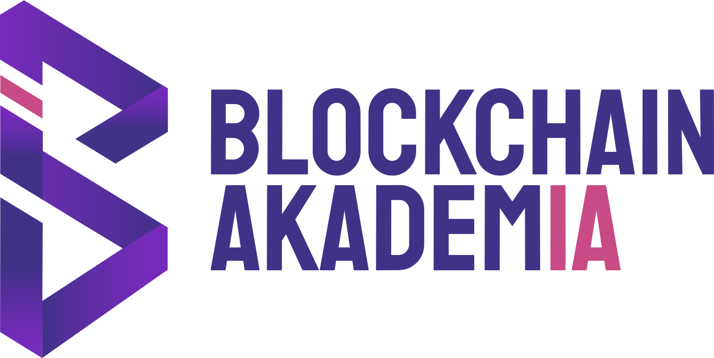

Tout ce qu'il faut savoir pour suivre le test client et faire les modifications pendant l'absence de Matis, avec Claude Code.
À lire en premier. Pages 2 et 3 : l'essentiel en 5 minutes.
Le projet s'ouvre dans Claude Code depuis le dossier 01_Projet_source. Claude y trouve automatiquement un fichier CLAUDE.md qui lui explique le projet.
État au 23 octobre 2026 : plateforme complète en FR et en EN, 16 vidéos, 10 paquets SCORM, guide et vue d'ensemble à jour.
Blockchain AkademIA · document interne · 23 octobre 2026
Le produit. Une formation en ligne à la maîtrise de l'IA, exigée par l'article 4 du règlement européen sur l'IA (AI Act). 4 niveaux d'environ 25 minutes, une évaluation finale, une attestation. Histoire fil rouge : l'entreprise fictive Nexalis, à Belval.
| Élément | Détail |
|---|---|
| Niveaux | 1 Où est l'IA ? · 2 Qui est responsable ? · 3 Les lignes rouges · 4 Nos réflexes. Chacun : 2 vidéos, une séance (questions corrigées), 2 fiches PDF, 3 scénarios, un quiz de validation, un récap et un rapport. |
| Validation d'un niveau | Au moins 80 % sur la séance et les scénarios et quiz de validation réussi (5 bonnes réponses sur 6, tirées parmi 12). Le niveau suivant se débloque alors. |
| Évaluation finale | 20 questions (5 par niveau), seuil 80 %, ouverte quand les 4 niveaux sont validés. |
| Langues | Français par défaut. Bouton FR | EN en haut de la version web. Tout est traduit, vidéos comprises. |
| Option « temps régulé » | Dans « Mon profil ». Désactivée par défaut. Option de démonstration : pages de cours affichées au moins 1/3 du temps indiqué, vidéos à voir en entier. |
| Dossier | Usage |
|---|---|
web/ | AI_Act_BA.html + dossier videos (à garder côte à côte). Version de démonstration complète FR/EN. Ajouter ?apercu=1 à l'adresse pour débloquer tous les niveaux. |
scorm/ | 5 paquets Moodle en français : niveaux 1 à 4 + évaluation finale. |
scorm_en/ | 5 paquets Moodle en anglais, mêmes fonctions. Ne pas mélanger les deux séries dans un même cours. |
| Dossier | Contenu |
|---|---|
| 00_LIRE_EN_PREMIER.pdf | Ce document. |
| Retours_client.md | Modèle de tableau pour noter les retours du client pendant le test. |
| 01_Projet_source | Le projet complet, à ouvrir dans Claude Code. Code, contenu, vidéos utilisées, outil vidéo, guide, vue d'ensemble, CLAUDE.md, LISEZMOI.md. |
| 02_Livrables | Les fichiers prêts à envoyer (web, SCORM FR, SCORM EN), copie de dist/ au 23 octobre. |
| 03_Videos | Les 16 vidéos d'avatars d'origine, sans sous-titres (8 FR, 8 EN). Les versions sous-titrées sont dans 01_Projet_source/src/videos_HD_soustitrees (HD) et src/videos (720p, utilisées par la plateforme). |
| 04_Charte_et_logos | Logos Blockchain AkademIA (PNG, HD, fichier Illustrator .ai), planches de la charte (couleurs), polices de la plateforme (Poppins, Titillium Web). |
| 05_Scripts_videos | Textes des vidéos : FR définitifs (ce qui est réellement dit), première version FR, scripts EN. |
| 06_Documents | Guide utilisateur (pour le client), vue d'ensemble de tout le contenu (toutes les questions et réponses), dossier de recherche juridique qui sert de source au contenu. |
| Rôle | Code |
|---|---|
| Violet principal | #44318D |
| Violet sombre | #20035A |
| Rose (accent, mots clés) | #D93F87 |
cd dans le dossier puis claude).python3 build.py et vérifier en FR et en EN.CLAUDE.md et LISEZMOI.md en premier. Les règles sont les mêmes.| Le client demande… | Où (dans 01_Projet_source) |
|---|---|
| Corriger un texte du cours, une question, un scénario | src/js/content.js (FR) et l'équivalent anglais : src/js/en.js (niveau 1) ou src/js/en_content.js (niveaux 2 à 4) |
| Changer une question du quiz de validation | src/js/quiz.js (FR) et EN_QUIZ / quiz dans les fichiers EN. La 1re option est toujours la bonne. |
| Changer le nombre de questions ou un seuil | SETTINGS en haut de src/js/quiz.js |
| Modifier une fiche pratique | FICHES dans content.js et EN_FICHES / fiches côté EN |
| Un texte de bouton, de menu, de page | src/js/app.js, puis sa traduction dans UI_EN de src/js/en.js |
| Couleurs, tailles, mise en page, impression | src/css/style.css |
| Une illustration | src/js/illus.js |
| Une vidéo | Voir la partie 6 |
| Le guide client ou la vue d'ensemble | Guide utilisateur/guide.html · Vue d'ensemble/generer_vue_ensemble.js |
python3 build.py. Les fichiers de dist/ ne se modifient jamais à la main.CONTENT_VERSION et CONTENT_DATE dans content.js (affichés sur la plateforme et les PDF).python3 build.py sans erreur.dist/web/AI_Act_BA.html?apercu=1 en navigation privée : vérifier la page modifiée en FR, puis cliquer sur EN et vérifier aussi.dist/ dans 02_Livrables si c'est ce dossier qui est partagé.Compresser le dossier web entier (HTML + sous-dossier videos, environ 170 Mo) et l'envoyer par WeTransfer ou Drive. Ne jamais envoyer le HTML seul : les vidéos ne s'afficheraient pas.
Chaque module commence par une vidéo d'avatar d'environ 1 min 15, avec sous-titres incrustés et cartes animées aux couleurs BA. En mode EN, la plateforme lit la version -en.mp4.
| Fichier | Rôle |
|---|---|
03_Videos/… | Vidéos d'avatars d'origine, sans habillage |
src/videos_HD_soustitrees/ | Versions finales HD (archives) |
src/videos/ | Versions 720p utilisées par la plateforme (noms à respecter : niveau2-module1.mp4, niveau2-module1-en.mp4…) |
outils_video/habillage.py et la configuration de la vidéo dans outils_video/configs/ (sous-titres calés sur la voix + cartes).python3 build.py.| Sujet | État |
|---|---|
| Panneau administrateur | Prévu (aller à un niveau, simuler une validation, réinitialiser, montrer les bonnes réponses) mais mis en attente : Matis avait des réserves. Ne pas le développer sans son accord. |
| Relecture juridique | À faire avant diffusion large : les 48 questions des quiz, les vrai/faux reformulés, les mauvaises réponses des scénarios, toute la version anglaise. La citation anglaise de l'article 4 modifié est une traduction non officielle. |
| Test Moodle réel | Pas encore fait (seulement un Moodle simulé). À faire dès que le client donne accès à son Moodle, ou sur SCORM Cloud. |
| Temps régulé | Option de démonstration. Ne bloque que la séance : le menu permet d'aller directement aux scénarios. |
| Coordonnées dans le guide | La dernière page du guide renvoie à « votre interlocuteur Blockchain AkademIA », sans coordonnées. |
Retours_client.md et attendre le retour de Matis, sauf urgence.| Symptôme | Cause et solution |
|---|---|
| La vidéo affiche « bientôt disponible » | Le dossier videos n'est pas à côté du HTML, ou un nom de fichier a changé. |
| Un texte reste en français en mode EN | Texte ajouté sans traduction : l'ajouter dans UI_EN (src/js/en.js) ou dans le contenu EN. |
| Progression perdue | Version web : liée au navigateur. Tester en navigation privée. Moodle : liée au compte. |
| Texte noir en haut des PDF | En-têtes du navigateur : décocher « En-têtes et pieds de page » dans la fenêtre d'impression. |
| Un niveau reste verrouillé pendant une démo | Ajouter ?apercu=1 à l'adresse. |
| Les bonnes réponses sont toujours à la même place | Nouvelle question sans position : l'ajouter dans la table POS de app.js. |
| Zip SCORM refusé par Moodle | Limite de taille du Moodle (paquets de 17 à 27 Mo) : demander à l'administrateur de l'augmenter. |
Python 3, Node.js, ffmpeg, Whisper (pour caler les sous-titres), Google Chrome (tests et PDF). Claude Code sait les utiliser.